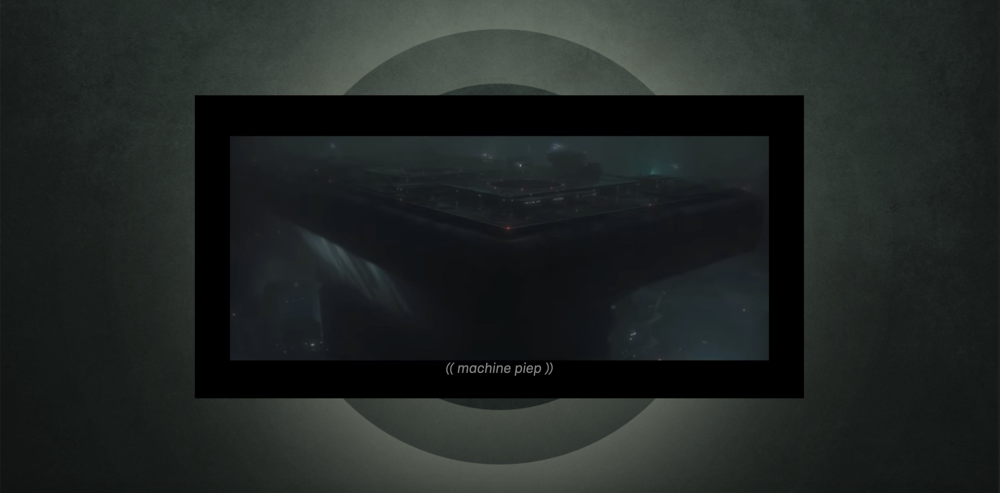

De uitdaging bij deze opdracht was om geluiden uit twee scenes van de Blade Runner met css te animeren, terwijl de video afspeelt. Voor iemand die doof is kan deze scene droog overkomen, terwijl er eigenlijk heel veel spanning in zit. Ik heb geprobeerd om lekker veel te experimenteren en de spanning & sfeer van de scenes meer naar voren te laten komen door middel van verschillende visuele elementen.
Bekijk websiteTypografie
Ik heb gekozen om gebruik te maken van het Brenner font, hier heb ik voor gekozen omdat je met dit font veel verschillende kanten op kunt en hiermee met de typografie veel kunt zeggen.
Voor de machine heb ik gekozen voor brenner mono, omdat dit font statisch en computerachtig lijkt. Bij de hoofdrolspeler heb ik gekozen voor brenner, een wat losser speelser font. Hier heb ik voor gekozen om dit karakter menselijker te maken en om het contrast tussen deze twee personen te versterken.


Kleur & elementen
De meeste geluiden heb ik met kleur & vorm gevisualiseerd. Aan het begin hoor je spannende muziek, de achtergrond verandert steeds van kleur op de maat van de muziek en het scherm wordt af en toe donkerder.
Waneer de scene zich binnen verder afspeelt, voelt de sfeer bedrukt. Over het hele scherm heb ik een soort raster overlay geplaatst, waardoor ik het 'gevangen' gevoel meer naar voren wil laten komen.
Tweede scene
Bij de tweede scene zijn de geluiden heftiger en zijn de muziek & tonen intenser. Hier heb ik de achtergrond steeds donkerder laten worden en komt er ook langzaam een donkere en rode gloed om het scherm. Daarnaast heb ik op de video een invert effect geplaatst (flitst heel snel). Wanneer het geluid aan het einde minder wordt faden deze effecten ook weer uit.